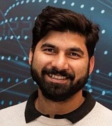
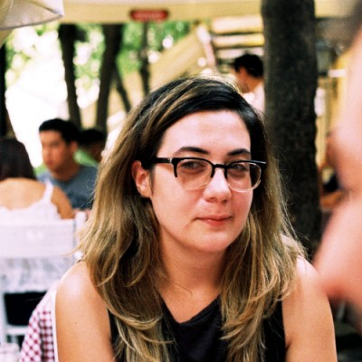
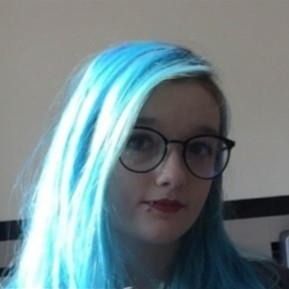
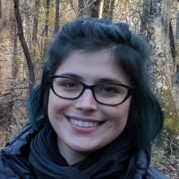
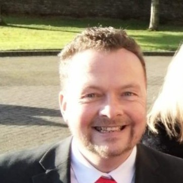

| |
|
|
|
Intelligent Systems Research Centre
Ulster University (Derry~Londonderry Campus)
Seminar Series
Seminars usually take place from 12.30-1.30pm on Wednesdays in person the MS building board room (MS105) and/or streamed online via Microsoft Teams. Contact Cian O'Donnell or Louise Gallagher for more information.
Seminar archives: 2023/24, 2022/23.
11/09/24: Vimal Dwivedi (ISRC, UU)

Webpage
Google Scholar
Vimal Dwivedi earned his PhD in Computer Science and Engineering from Tallinn University of Technology, Tallinn, Estonia, in May 2022, with a project sponsored by the Qtum Foundation, Singapore. During his doctoral research, he developed a smart contract language (See his Ph.D. thesis) aimed at facilitating the development of error-free blockchain applications. Currently, he holds a position as a Lecturer in Data Analytics at Ulster University. Before this role, he was lecturer in Computer Science at Teesside University, England and prior to this role, he contributed as a Postdoctoral Research Associate in the School of Electronics, Electrical Engineering, and Computer Science (EEECS) at Queen's University Belfast (QUB), Northern Ireland, United Kingdom. There, he worked on a project titled "Digital Twin and Blockchain for Business Decision Modeling" in ARC research group with the collaboration with PwC Belfast, Northern Ireland. His research interest includes Blockchain Systems, Digital Identity, Web 3.0, Digital Twins.
Utilising blockchain and digital twin for supply chain resiliency
In today's dynamic and interconnected global economy, supply chain resilience is paramount to ensuring continuity and mitigating disruptions. This talk explores the innovative integration of blockchain technology and digital twin models to enhance supply chain resilience. Blockchain provides a decentralized and immutable ledger that ensures transparency, traceability, and security across all supply chain processes, while digital twins offer real-time, virtual representations of physical assets, enabling predictive analytics and scenario planning. By combining these technologies, organisations can achieve a more responsive and adaptive supply chain, capable of withstanding disruptions and optimising performance. The talk outlines the key benefits of this integration, including enhanced visibility, improved risk management, and greater operational efficiency, and discusses potential challenges and future directions for research in this evolving field. Through case studies and simulations, this talk demonstrate the practical applications and value of utilizing blockchain and digital twin technologies in creating a resilient supply chain infrastructure.
In-person seminar.
1pm 26/09/24: Mark Ng (School of Engineering, UU Belfast)
MS Teams link for seminar
Webpage
I received the BEng (Hons) in Electrical and Computer Systems Engineering and the Ph.D. in Fault Diagnosis and Control System from Monash University in 2006 and 2009, respectively. I am currently a Senior Lecturer in Mechatronics Engineering and Control at the School of Engineering, Ulster University, UK, and I am attached to the Nanotechnology and Integrated BioEngineering Centre (NIBEC). My research interests include fault diagnosis, mathematical modelling, digital twin, and data analytics for anomaly detection and classification.
Digital Twin of a Vehicular Engine as a Simulation Environment Platform for Fault Diagnosis
Fault diagnosis in highly nonlinear dynamic systems, such as vehicle engines, has garnered significant attention, particularly with the automotive industry's shift towards autonomous driving technologies. This seminar presents a comprehensive model-based digital twin testbed of a turbocharged spark-ignited (TCSI) petrol engine system for testing and evaluating residuals generation and fault diagnosis methods. Developed using Matlab/Simulink, the testbed provides a user-friendly graphical interface to simulate engine behavior and to visualize engine telemetries under various industrial-standard driving cycles, including the Worldwide Harmonized Light Vehicle Test Procedure (WLTP), New European Driving Cycle (NEDC), Extra-Urban Driving Cycle (EUDC), and U.S. Environmental Protection Agency Federal Test Procedure (FTP75).
The Interface allows the designer to Induce one of eleven specific faults, facilitating a deeper understanding of their impact on engine performance without risking permanent damage or reduced engine lifespan. This simulation testbed offers an invaluable platform for researchers and automotive engineers to generate essential data, fostering the development and comparison of current and emerging fault diagnosis methodologies for automotive engine systems.
This seminar will cover the following topics:
- Modeling and Control of the TCSI Petrol Engine
- Establishing the Classification and Types of Faults of Interest
- Design of Residuals for Fault Detection
- Fault Isolation
- Design of the Digital Twin Simulation Environment
- Other Digital Twin-related Research Activities
In-person seminar.
12.30pm 09/10/24
MS Teams link for seminar
Valentina Gogulancea (ISRC, UU)

Webpage
I have a background in mathematical modelling and hold a PhD in Chemical Engineering from University Politehnica of Bucharest. My first postdoc position was in Newcastle University, working to establish a mathematical modelling strategy to better understand the bacterial processes in wastewater treatment. I joined Ulster University as a Research Associate in 2020, in the Centre for Sustainable Technologies, where I employed mathematical and economic modelling to evaluate clean energy production technologies. I joined the School of Computing in 2023 as a data scientist on the LUCIA project and I'm currently working to develop GeoAI models able to predict individual and population-level lung cancer risk using electronic health records and socio-environmental data.
AI, healthcare and geography: understanding lung cancer risk factors beyond smoking.
After a brief overview of my work with individual based models for bacterial biofilm formation, I will give a short introduction to the LUCIA - LUng Cancer-related risk factors and their Impact Assessment - project. Lung cancer is the second most diagnosed cancer and the leading cause of cancer death worldwide. Early detection is paramount to improve patient outcomes, but current lung cancer screening is costly and underdeveloped. Similarly, while the link between developing lung cancer and smoking is well established, the contribution of other factors such as indoor and outdoor pollution, co-morbidities, genetics and biological pathways is under-researched. The talk will discuss the role of explainable GeoAI (AI models that use geospatial data and output geospatial predictions) in healthcare research, the current limitations of GeoAI techniques and future research directions. The link between environmental and socio-economic conditions and lung cancer incidence will be highlighted, using examples from literature and preliminary results from the LUCIA project.
Alex Brennan (ISRC, UU)

LinkedIn
PhD Researcher at Ulster University focusing on Virtual Reality and Games for Rehabilitation.
A Pilot Study on the User Experience of Different Upper Body Extended Reality Physiotherapy Interventions.
The implementation of Extended Reality (XR) technology into physiotherapy settings has shown promising outcomes across various patient groups, with user experience playing a key role in determining how well these approaches are accepted in both home and clinical settings. This presentation will explore how XR physiotherapy interventions impact user experience. Six participants took part in a study with three stages. In Stage 1, participants watched a physiotherapy video on a computer, while Stages 2 and 3 used a Meta Quest 3 headset, with Stage 2 introducing ghosting as an additional guide, and Stage 3 adding both visual and auditory feedback after exercises. Data was collected using questionnaires and interviews to measure user experience and mental workload, showing stage 3 had the highest mental workload and the most satisfaction. Participants preferred the XR stages for better focus and enjoyment, highlighting XR’s potential to improve engagement in physiotherapy.
In-person seminar.
23/10/2024: Guest industrial speaker from FinTrU
Title TBA
Abstract TBA.
In person seminar.
3pm 06/11/24: Carsen Stringer (HHMI Janelia Research Campus, USA)
MS Teams link for seminar

Webpage
Research group webpage
Carsen Stringer is a group leader at HHMI Janelia Research Campus. The lab develops algorithms for understanding large-scale neural activity. In addition, the lab works on general segmentation algorithms for cellular data, which enable fast and accurate processing of ~50,000 neuron recordings. Here's a biography of Carsen written by Daniela Cassataro for Stories of Women in Neuroscience (includes a podcast version). Carsen also talks about past and current work in this podcast with Paul Middlebrooks.
Title TBA
Abstract TBA.
Online seminar.
20/11/2024: TBC
12.30pm 04/12/24: James Connolly (ISRC, UU)
MS Teams link for seminar

Webpage
Experienced Lecturer and researcher with a demonstrated history of working in the higher education industry. Skilled in Digital Healthcare and connected health, Big Data Analytics, and Artificial Intelligence. Strong education professional with a Doctor of Philosophy (PhD) focused on a combination of wearable technology and computing from Ulster University.
Title TBA
Abstract TBA.
In person seminar.
|